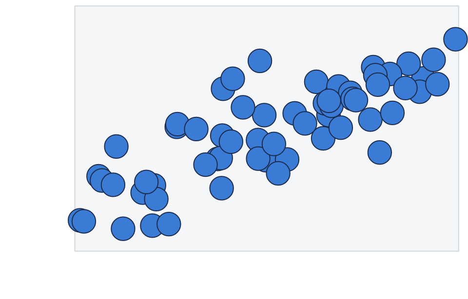

vellum is a low-level graphics framework for R, in the spirit of grid, with a Rust backend. You describe a scene with a small, declarative R API; the scene graph, unit and layout engine, and rendering all run in Rust; and the same scene renders to PNG, SVG, or PDF.
It is the foundation layer a grammar of graphics builds on, the way grid underlies ggplot2. It is not a plotting package itself, so there are no scales, stats, geoms, or facets here. What it gives you is the drawing substrate: units, viewports, grobs, layout, and a deterministic renderer.
A first scene
A scene starts with vl_scene(), which fixes the page
size (in inches by default) and background. You then add content with a
pipeline of draw() calls and show the result. Auto-printing
a scene displays it, so the last line of a chunk is enough.
vl_scene(width = 6, height = 3, bg = "white") |>
draw(rect_grob(
width = 0.94, height = 0.82,
gp = vl_gpar(fill = linear_gradient(c("#1b2a4a", "#3a7bd5")), col = NA)
)) |>
draw(circle_grob(
x = 0.16, y = 0.5, r = 0.28,
gp = vl_gpar(fill = "#f7c948", col = NA)
)) |>
draw(text_grob(
"vellum", x = 0.62, y = 0.5,
gp = vl_gpar(fontsize = 48, col = "white", fontface = "bold")
))Three ideas do most of the work here.
Grobs are the drawable primitives:
rect_grob(), circle_grob(),
text_grob(), and a couple of dozen more (see
?grob). Each is an immutable value object; building one
draws nothing on its own.
vl_gpar() carries the graphical
parameters (fill, stroke colour, line width, font, opacity) attached to
a grob. A fill can be a plain colour or a gradient, as
above.
Coordinates default to "npc":
normalised parent coordinates, where (0, 0) is the
bottom-left of the region and (1, 1) the top-right. So
x = 0.16 sits near the left edge and y = 0.5
is vertically centred.
Building a scene: push, draw, pop
A scene is a tree of viewports and grobs, built functionally.
push() descends into a new vl_viewport(),
draw() adds a grob at the current level, and
pop() ascends. A viewport is a rectangular region that
establishes its own coordinate systems, so once you push one with an
xscale and yscale, "native" units
map data values straight onto the region.
set.seed(1)
x <- runif(60, 0, 10)
y <- 1.8 * x + rnorm(60, 0, 4)
vl_scene(5, 3.2, bg = "white") |>
push(vl_viewport(
x = 0.57, y = 0.57, width = 0.82, height = 0.82,
xscale = c(0, 10), yscale = range(pretty(y))
)) |>
draw(rect_grob(gp = vl_gpar(fill = "#f4f6f8", col = "#cfd8dc"))) |>
draw(points_grob(
vl_unit(x, "native"), vl_unit(y, "native"),
size = vl_unit(3.2, "mm"),
gp = vl_gpar(fill = "#3a7bd5", col = "#1b2a4a", lwd = 1)
)) |>
pop()
The panel rectangle is drawn in "npc" (it fills its
viewport), while the points are placed in "native" units,
so their positions follow the data scales. A single
vl_unit() vector can even mix coordinate systems per axis.
See vignette("scene-and-paint") for the full picture of
units, viewports, and the paint model.
Rendering to a file
Displaying a scene is convenient while exploring. To write output,
call render(); it picks the backend from the file
extension.
s <- vl_scene(4, 3) |>
draw(circle_grob(r = 0.3, gp = vl_gpar(fill = "tomato", col = NA)))
render(s, "out.png") # raster (tiny-skia)
render(s, "out.svg") # vector (hand-rolled SVG)
render(s, "out.pdf") # vector (krilla)The same scene value renders to all three formats with consistent geometry, and raster and PDF output is byte-stable, so it is reproducible and snapshot-testable.
Where to go next
-
vignette("scene-and-paint"): the scene graph, units and viewports, and the paint model (gradients, patterns, masks). -
vignette("retained-mode"): because the scene graph is kept rather than drawn and forgotten, you can hit-test it and edit nodes by name. -
vignette("coming-from-grid"): a translation guide if you already know grid. -
vignette("grid-interop"): render existing grid, ggplot2, and lattice output through the vellum backend. ```